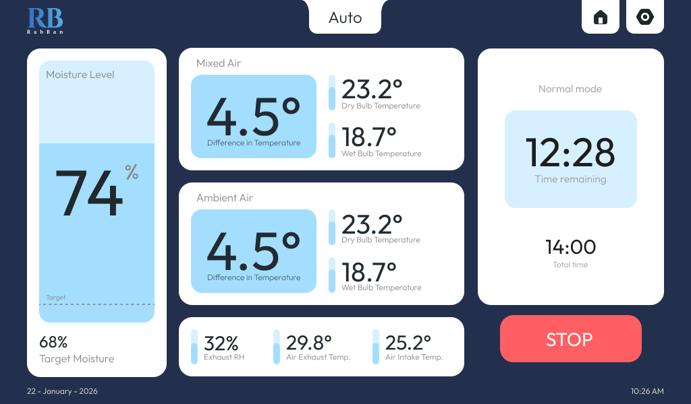
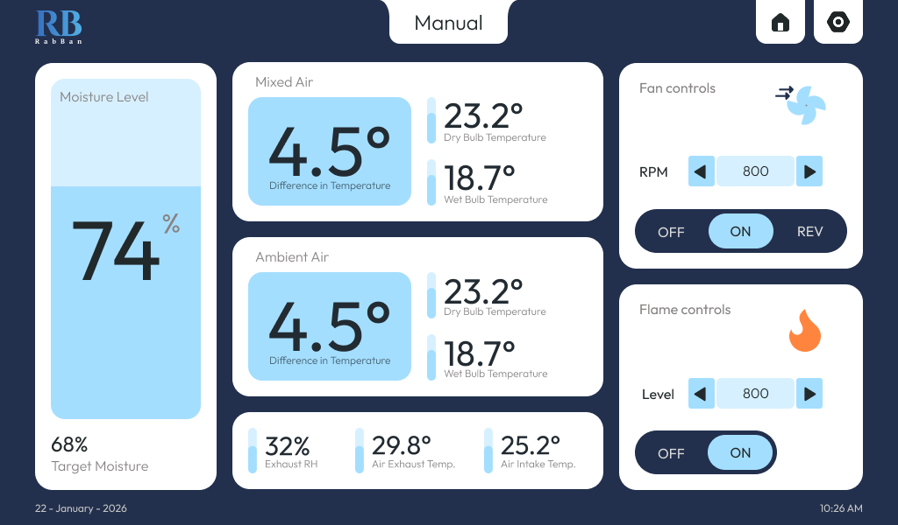
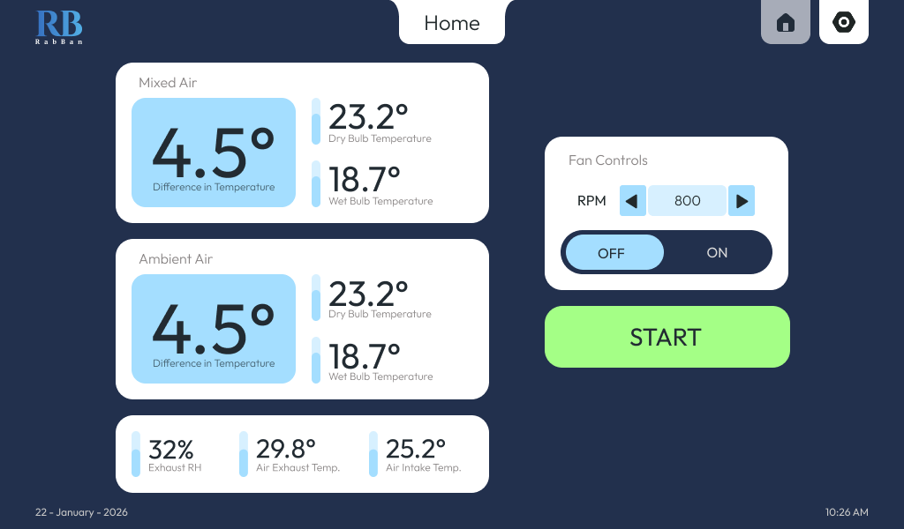
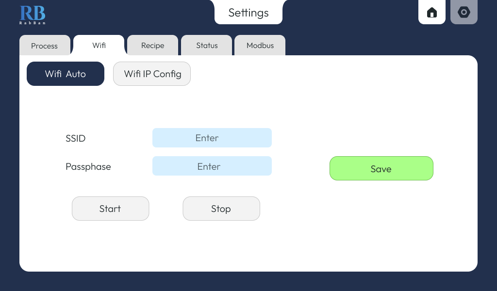
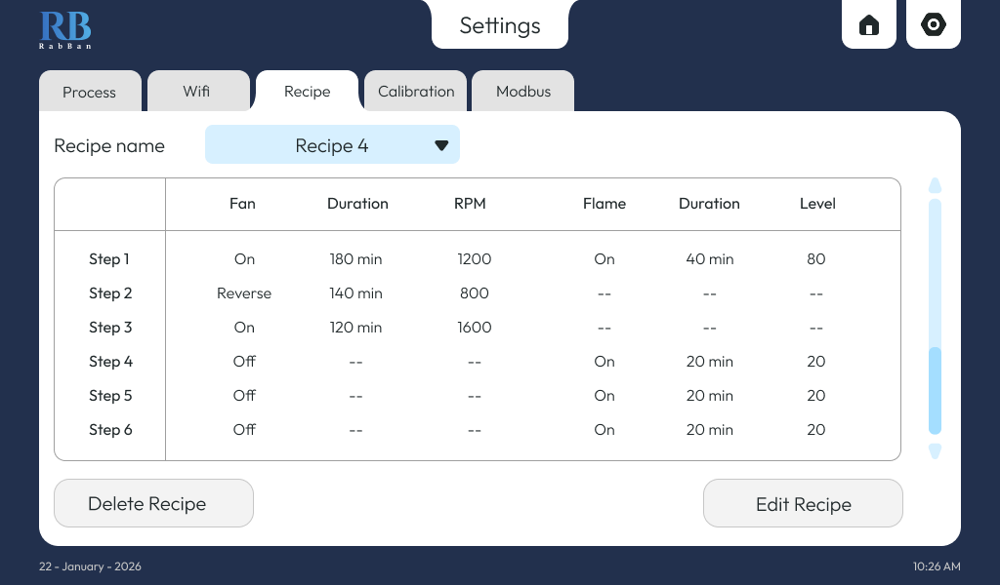
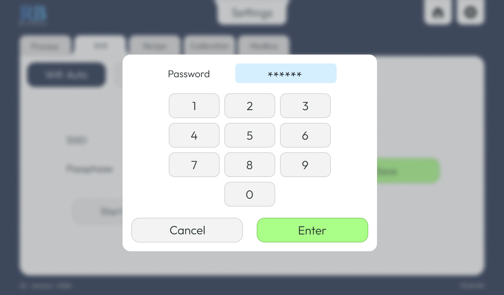

Trough COntroller
An interface layer for a single-unit tea trough system — presenting live process conditions and enabling structured control through a clear, centralized dashboard. Supports both manual interaction and scheduled operation through predefined recipes.









The interface brings together multiple environmental and process inputs into one view — allowing operators to track drying conditions without needing to interpret scattered data points. Key readings such as dry bulb and wet bulb temperatures, moisture levels (current vs target), exhaust RH, and room conditions are continuously displayed alongside system status indicators.
Control is focused on operational elements like burner and fan management, as well as recipe-based scheduling. Operators can configure and run predefined drying cycles, monitor their progress in real time, and understand exactly what stage the system is in at any given moment. Accessible across devices within a local network — via mobile or desktop — without being tied to the physical control unit.
- Unified dashboard for all critical drying parameters
- Live comparison of current vs target moisture levels
- Recipe-based scheduling with real-time progress tracking
- Control over burner and fan systems
- Local network access across mobile and desktop devices